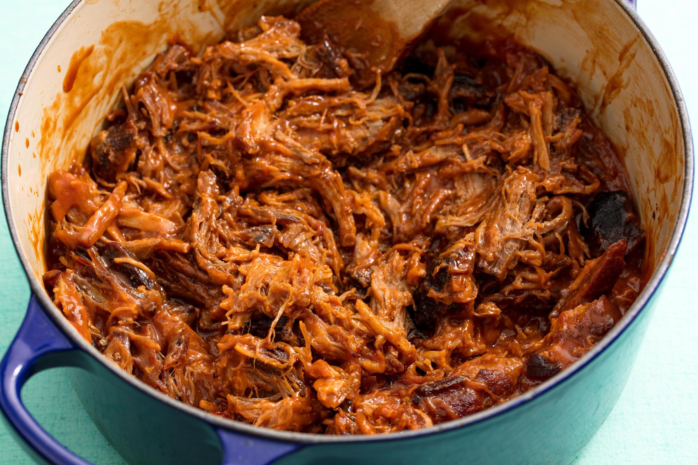

Pulled Pork - v1

Description
Braised pulled pork recipe. Use pork shoulder or boston butt.
Cook Time ~5hr
Ingredients
- 4 lb. boneless pork butt
- 3 tbsp. packed brown sugar
- 1 tbsp. kosher salt
- 1 tbsp. smoked paprika
- 1 tsp. garlic powder
- 1 tsp. ground cumin
- 1 tsp. onion powder
- Freshly ground black pepper
- 2 tbsp. vegetable oil
- 12 oz. lager
Steps
- Preheat oven to 300°. Trim excess fat from pork and cut into large pieces to fit in a large Dutch oven
- In a small bowl, combine brown sugar, salt, paprika, garlic powder, cumin, and onion powder; season with black pepper. Rub all over pork (This can be done the night before)
- In large Dutch oven over medium high heat, heat oil. Working in batches, cook pork until browned on all sides, about 2 minutes per side (Spices can burn quickly, so don't let it go for too long!) Pour beer around pork and cover with a lid
- Bake until pork is just beginning to turn tender, about 3 hours. Uncover and continue to bake until pork is very tender and easily pulls apart with a fork, 1 to 2 hours more
- Transfer pork to a cutting board, reserving pan drippings in pot, and let rest until ready to use